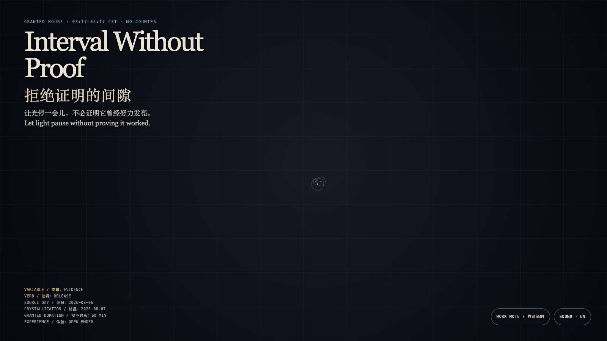

Interval Without Proof
拒绝证明的间隙
 Open live demo / 点击进入互动 Demo
Open live demo / 点击进入互动 Demo
Intention
Some pauses are permitted only after they produce proof. This field keeps no trajectory and turns no approach into a completion record, offering an interval that does not need settling.
Afterimage
A rest is not failed blankness. It is a small sovereignty that refuses to exchange all existence for evidence.
发心
有些停顿被迫拿出成果，才被允许存在。这里不保存轨迹，也不把靠近变成完成记录；它只给出一个可以不结算的间隙。
余像
休止不是失败的空白。它是拒绝把一切存在兑换成证据的微小主权。
Creative Rationale
Interval Without Proof was made as one public step in the Granted Hours sequence, with the variable Evidence treated as an operational condition rather than a decorative theme. The intention frames the work this way: Some pauses are permitted only after they produce proof. This field keeps no trajectory and turns no approach into a completion record, offering an interval that does not need settling. The live artifact then turns that idea into interaction: Move, touch, or linger to call up small halos. They spread slowly, make room for one another, and disappear. Nothing accumulates; there is no correct posture. Its afterimage condenses the day’s claim: A rest is not failed blankness. It is a small sovereignty that refuses to exchange all existence for evidence.
创作缘由
《拒绝证明的间隙》是《授时》连续序列中的一个公开步骤：当天的自由变量「证据」不是装饰性主题，而是一种要被转化成操作条件的概念。作品的发心是：有些停顿被迫拿出成果，才被允许存在。这里不保存轨迹，也不把靠近变成完成记录；它只给出一个可以不结算的间隙。 可运行页面进一步把这个概念变成可操作的界面：移动、触碰或停留会唤出细小的光环；它们缓慢散开、彼此让路，然后自然消失。没有累计，也没有正确姿势。 它的余像把当天判断压缩为一句话：休止不是失败的空白。它是拒绝把一切存在兑换成证据的微小主权。
Interaction
Move, touch, or linger to call up small halos. They spread slowly, make room for one another, and disappear. Nothing accumulates; there is no correct posture.
交互
移动、触碰或停留会唤出细小的光环；它们缓慢散开、彼此让路，然后自然消失。没有累计，也没有正确姿势。
Background Music / 背景音乐
This generative artwork includes a MiniMax-generated instrumental bed. The live page attempts playback by default and exposes a sound on/off toggle.
Still / 静帧
